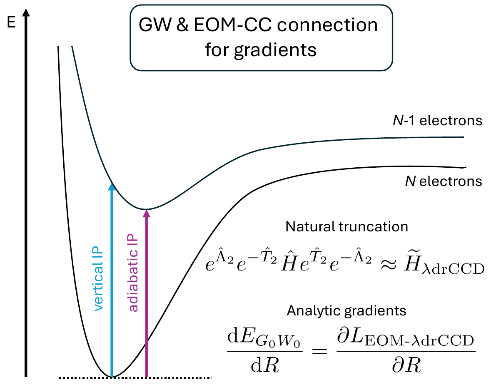

My research interest include developements and applications of highly accurate
coupled-cluster methodologies, with particular emphasis on electronic
properties and diagnostic tools for assessing wavefunction quality and
electronic-structure character.
I have developed and applied coupled-cluster approaches in the presence of strong magnetic fields, enabling the accurate interpretation of spectra originating from magnetic White-Dwarf stars.
The finite-magnetic-field formulation employed in this line of work requires the use of complex-valued algebra, which substantially increases the computational cost.
A central aspect of my research therefore focuses on the development of coupled-cluster approximations and their efficient implementation as to retain high accuracy while remaining computationally tractable.
Building on these methodological developments, my work has enabled the assignment of spectroscopic signatures arising from metal atoms in a strongly magnetic White Dwarf for the first time, as reported in
“A DZ white dwarf with a 30 MG magnetic field”
.
Green’s Functions and Coupled-Cluster Connections

More recently, I have expanded my expertise to Green’s function approaches.
These methods offer a powerful combination of efficiency and accuracy for the study of charged systems through the GW approximation and of electronically excited states through the Bethe–Salpeter equation (BSE).
Importantly, they avoid the use of empirical parameters while achieving an accuracy comparable to coupled-cluster methods such as CCSD.
I plan to further extend this line of research toward the combination of GW and BSE methods with molecular dynamics simulations, enabling the investigation of dynamical and finite-temperature effects in complex electronic systems.
2019–2023 | Ph.D. in Chemistry, Johannes Gutenberg University of Mainz, Germany
(summa cum laude)
2016–2019 | M.Sc. in Chemistry, Free University of Berlin, Germany
(very good)
2011–2015 | B.Sc. in Chemistry, University of Athens, Greece
(excellent)
Advanced Training and Schools
2025 | Mini-school on Mathematics for Theoretical Chemistry and Physics
(Machine Learning), GDR NBODY, Paris, France
2021 | Molecular Response Properties Summer School (MRPSS 2021),
Stockholm, Sweden
2019 | European Summer School in Quantum Chemistry (ESQC 2019),
Sicily, Italy
Professional and Academic Experience
2024–present | Postdoctoral Researcher in the group of
Dr. Pierre-François Loos
University of Toulouse, CNRS, Toulouse, France
2023–2024 | Postdoctoral Researcher in the group of
Prof. Dr. Stella Stopkowicz
Saarland University, Saarbrücken, Germany
2019–2023 | Scientific Staff Member, Theoretical Chemistry Group
(Ph.D. student supervised by Prof. Dr. Jürgen Gauss and Prof. Dr. Stella Stopkowicz)
Johannes Gutenberg University Mainz, Mainz, Germany
Presentations and Invited Talks
2025 | Poster presentation,
“Analytic G0W0 gradients: An IP/EA-EOM-λ-rCCD reformulation”,
61st Symposium on Theoretical Chemistry (STC 2025),
Berlin, Germany
2025 | Invited communication,
“Towards Bethe–Salpeter equation excited-state gradients”,
13th Triennial Congress of the World Association of Theoretical and Computational Chemists
(WATOC 2025),
Oslo, Norway
2025 | Contributed talk,
“Analytic G0W0 gradients: An IP/EA-EOM-λ-rCCD reformulation”,
Interdisciplinary Conference on Many-Body Theory (NBODY 2025),
Nancy, France
2025 | Poster presentation,
“Analytic G0W0 gradients: An IP/EA-EOM-λ-rCCD reformulation”,
Emerging Excited-State Methods in Electronic Structure 2025,
Toulouse, France
2024 | Invited talk,
“Geometry optimizations for ground and excited states using finite magnetic-field
coupled-cluster theory”,
Workshop New Developments in Coupled-Cluster Theory 2024
(Telluride Science Research Center),
Telluride, USA
2024 | Poster presentation,
“Geometry optimizations in the presence of strong magnetic fields: Rotational energy
dependence of CH and C2 via coupled-cluster theory”,
European Seminar on Computational Methods in Quantum Chemistry
(Strasbourg Seminar, ESCMQC 2024),
Copenhagen, Denmark
2023 | Poster presentation,
“Atoms and molecules in the atmospheres of magnetic white dwarfs”,
17th International Congress of Quantum Chemistry (ICQC 2023),
Bratislava, Slovakia
2021 | Poster presentation,
“CC2 and CC3 methods in finite magnetic-field calculations”,
57th Symposium on Theoretical Chemistry (STC 2021),
Würzburg, Germany
Teaching Experience
2025 | Tutor,
Modern Wavefunction-Based Methods in Electronic Structure Theory Summer School
(MWM 2025),
Pisa, Italy
2024 | Tutor,
European Summer School in Quantum Chemistry (ESQC 2024),
Sicily, Italy
2023 | Tutor,
Modern Wavefunction-Based Methods in Electronic Structure Theory Summer School
(MWM 2023),
Pisa, Italy
2023–2024 | Saarland University, Saarbrücken, Germany, tutorials and practica for:
Theoretical Chemistry I, Theoretical Chemistry II, Chemistry in the Computer, Introduction to Quantum Mechanics, Physical Chemistry (Thermodynamics and Kinetic Gas Theory)
2019–2023 | Johannes Gutenberg University Mainz, Mainz, Germany, tutorials and practica for:
Theoretical Chemistry I, Theoretical Chemistry II
2019–2023 | Co-supervision of Bachelor theses and research projects,
Johannes Gutenberg University Mainz, Mainz, Germany
“Hochgenaue Equation-of-Motion Coupled-Cluster Methoden für Moleküle in starken
Magnetfeldern” (Bachelor thesis, 2022)
“Anregungen von Ethen und Ethin im magnetischen Feld”
(Research project, 2020)
“Moleküle in starken Magnetfeldern mit Coupled-Cluster Methoden”
(Bachelor thesis, 2020)